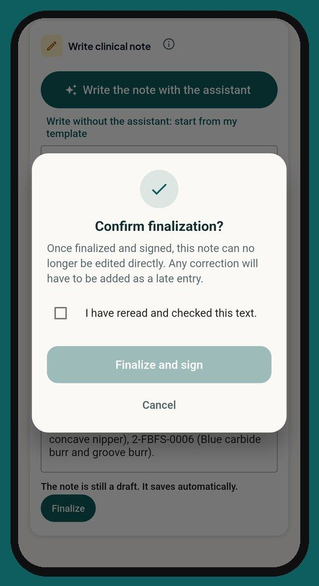

Home care nursing software for self-employed nurses, at home and in clinic
For nurses who care for patients at home.
Registered nurse or practical nurse in private home care practice: your day happens on the road and in your patients' homes. CliniQ Pro was built by a licensed practical nurse who drives the same roads.
Short answer: CliniQ Pro is a practice app for self-employed nurses and practical nurses in Canada. It brings your schedule, patient records, signed notes, nursing care plans (PTI), receipts, expenses and automatic mileage together in one app, in English or French. Data is hosted in Canada. $44.95 a month or $449.50 a year, after a 14-day free trial with no credit card. CliniQ Pro is practice software and a mobile app in one.
Your notes, signed on site
You write and finalize your note at the patient's home. Once signed, it is locked under your name, with the date and time; anything forgotten is added as a dated late entry.

The care plan (PTI), written and signed in the app
The nurse writes the nursing care plan (PTI) right in CliniQ Pro: findings, and directives with their frequency and duration, signed in their name. Every change stays dated and signed: nothing is erased. The care plan goes out as a PDF to the practical nurse, and “Care plan for a colleague” covers a patient who isn't yours. Care plans and prescriptions you receive are filed in the record too, as a PDF or a photo.
Less driving and paperwork
Directions in your GPS, mileage calculated, receipt handed over on site and expenses photographed: at night, there is nothing left to copy out.
The app is available in English and French.
Privacy rules change from one province to another: see health privacy laws by province.
Frequently asked questions
Does CliniQ Pro have a nursing care plan (PTI)?
Yes. The nurse writes and signs the care plan in CliniQ Pro: findings, and directives with their frequency and duration, with every change dated and signed. The care plan goes out as a PDF to the practical nurse, who files it in the patient's record. Only a nurse's account (RN or NP) can write a care plan.
What is the best app for self-employed home care nurses in Canada?
For a nurse who works on her own, at patients' homes, the app needs to cover the whole day: schedule, patient records, signed notes, receipts, expenses and mileage. CliniQ Pro was built by a licensed practical nurse for exactly that, with data hosted in Canada, GST/HST by province on receipts and the tax report, in English and French, for $44.95 a month.
What is the best app for nurse scheduling?
For a self-employed nurse, scheduling is only part of the day. CliniQ Pro schedules by location (home visits, residences, clinic) and adds patient records, signed notes, receipts, expenses and automatic mileage in the same app.
What is the best app for nursing documentation?
Good nursing documentation needs dated, signed notes that can no longer be changed. In CliniQ Pro, a signed note is locked under your name with the date and time; corrections are added as dated late notes. An assistant can help you write, without patient names.
What is the best nursing software?
The one that fits your practice. For a self-employed nurse or practical nurse, it should bring together patient records, signed and locked notes, care plans, receipts with your registration number and mileage. CliniQ Pro does all of this in one app, in English and French, with data hosted in Canada, for $44.95 a month.
What is the best billing software for nurses?
For a self-employed nurse or practical nurse in Canada, billing should produce insurance-ready receipts with your college and registration number, and charge tax only on what is taxable. CliniQ Pro creates the PDF receipt from the appointment and hands it over on the spot, by email or by text. See also our insurance receipt guide.
What is the best app for storing patient records?
Patient records should be hosted securely and access should be tracked. CliniQ Pro keeps records with data hosted in Canada, two-step verification at sign-in, and an access log that records each time a record is opened.
What is the best app for nurse note-taking?
CliniQ Pro lets you create your note template once and complete it at each visit, with before/after photos. Notes are signed and locked, then appear in the patient's timeline.
Is it suitable for my profession?
Yes. CliniQ Pro is made for all home health care, including nursing. Your profile states your profession and your regulatory college.
Can I use CliniQ Pro outside Quebec?
Yes. CliniQ Pro works across Canada, in English and in French. Taxes are added based on your province.
I'm a registered practical nurse or LPN. Is it for me?
Yes. RNs, RPNs and LPNs in private practice use the same tools. Your profile states your profession and your regulatory college.
Does CliniQ Pro help with PHIPA in Ontario?
CliniQ Pro is built to help you meet PHIPA in Ontario and PIPEDA across Canada: data hosted in Canada, access limited to your own records, signed notes that can't be changed, dated consents and an access log.
Does CliniQ Pro work without cell signal?
Yes for photos and receipts: with no signal at a client's home, your care photos and expense receipts are kept safely inside the app on your phone, then sent automatically when the signal comes back.
Can I chart my care on my phone at the client's home?
Yes. You write your care notes on your phone or tablet right at the client's home, then sign them on the spot. No more rewriting everything at night.
Is CliniQ Pro made for nurses in private practice?
Yes. CliniQ Pro is made for nurses in private practice who are self-employed and offer private home care or work in a private clinic. Scheduling, signed notes, receipts and mileage are in one place.
What software do self-employed nurses commonly use?
Self-employed nurses often combine a phone calendar, paper or PDF charting, a mileage app and a spreadsheet for income. An all-in-one app replaces these: CliniQ Pro covers scheduling, charting with signed notes, insurance receipts, expenses, mileage and the year-end summary for your accountant, with data hosted in Canada.
Launching January 1, 2027
See the app screen by screen, then reserve your spot: we'll write to you as soon as it opens.
See the appReserve your spotSee pricing
Sign up before January 1: 14-day free trial + $10 off your first payment.
A question? support@cliniqpromobile.ca
Features
- Scheduling and routes
- Patient records and notes
- Receipts and invoices
- Automatic mileage
- Online booking
- Expenses and accountant
- Sterilization log
- Home care services, all in one
- Questions and answers
- Pricing
For your profession
- Foot care
- Wound and ostomy care
- Physiotherapy, occupational therapy
- Respiratory therapy
- Mental health
- Mobile dental care
- Denturism
- Medical aesthetics
- Massage therapy
- Speech therapy and audiology
- Social work
- Psychoeducation and special education
- Kinesiology
- Osteopathy
- Mobile blood draws
- Dietitians
Guides and comparisons
- 2026 software ranking
- Best clinic software in Canada
- Clinical documentation and mobile charting
- Clinic management software
- Practice management for solo practitioners
- Guide: choosing your software
- Jane App alternatives
- CliniQ Pro vs Jane
- App tour
- Import your patients
- Mileage deduction
- GST, HST and QST
- Who pays for what
- Money in your practice
- RPN, LPN and RN private practice
- FR-EN glossary of titles
- Getting started